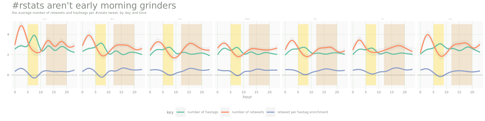
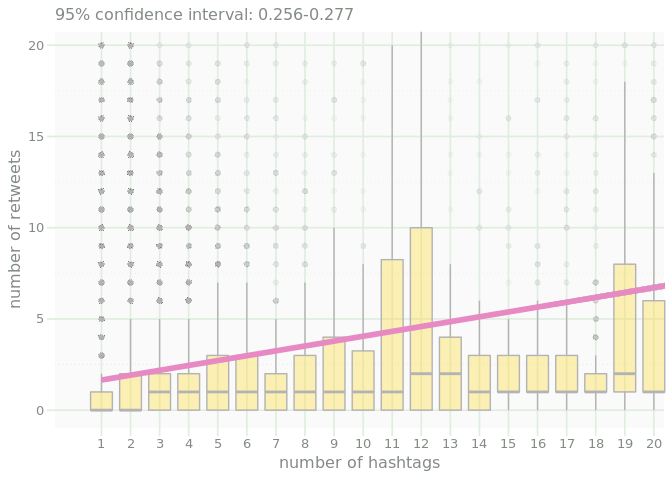

Tidy Tuesday: R Tweets
- make some new columns
- Set lables of variables of interest
- Main plot
- Morning
- afternoon
- The final Plot
library(tidyverse)
## ── Attaching packages ────────────────────────────────── tidyverse 1.2.1 ──
## ✔ ggplot2 3.1.0 ✔ purrr 0.2.5
## ✔ tibble 1.4.2 ✔ dplyr 0.7.7
## ✔ tidyr 0.8.2 ✔ stringr 1.3.1
## ✔ readr 1.1.1 ✔ forcats 0.3.0
## ── Conflicts ───────────────────────────────────── tidyverse_conflicts() ──
## ✖ dplyr::filter() masks stats::filter()
## ✖ dplyr::lag() masks stats::lag()
library(lubridate)
##
## Attaching package: 'lubridate'
## The following object is masked from 'package:base':
##
## date
library(gridExtra)
##
## Attaching package: 'gridExtra'
## The following object is masked from 'package:dplyr':
##
## combine
source("https://raw.githubusercontent.com/tkoomar/ggplot2_themes/master/theme_cc.R")
## Loading required package: showtext
## Loading required package: sysfonts
## Loading required package: showtextdb
tidytuesday_tweets <- readRDS("../data/2019/2019-01-01/tidytuesday_tweets.rds")
rstats_tweets <- readRDS("../data/2019/2019-01-01/rstats_tweets.rds")
## helper function for formatting correlation output
slope_conf <- function(x, y){
res <- lm(y ~ x)
conf <- confint(res, "x", 0.95)
paste0("95% confidence interval: ", round(conf[1], 3), "-", round(conf[2], 3))
}
make some new columns
We want to get the day of the week, and claculate the number of hastags per tweet.
rstats_tweets <-rstats_tweets %>%
mutate(w_day = wday(created_at, label = TRUE),
hour = hour(created_at)) %>%
rowwise() %>%
mutate(n_hash = length(hashtags))
Set lables of variables of interest
dat <- rstats_tweets %>%
mutate("retweet per hastag enrichment" = log2(retweet_count/n_hash),
"number of hastags" = n_hash,
"number of retweets" = retweet_count ) %>%
gather(key, value, "retweet per hastag enrichment", "number of hastags", "number of retweets")
Main plot
morning_col <- alpha("#ffd92f", 0.35)
noon_col <- alpha("#e5c494", 0.4)
p_week <- dat %>% ggplot(aes(x = hour, y = value, color = key)) +
annotate('rect', size = 0,
xmin = 5, xmax = 9,
ymin = -1, ymax = 5,
fill = morning_col) +
annotate('rect', size = 0,
xmin = 12, xmax = 20,
ymin = -1, ymax = 5,
fill = noon_col) +
stat_smooth(alpha = 0.1, size = 1.5) +
geom_hline(yintercept = 0, lty = 3) +
scale_color_brewer(palette = "Set2") +
facet_wrap(~ w_day, nrow = 1) +
coord_cartesian(ylim = c(-1,5)) +
ylab("") +
theme_cc(base_size = 12) +
theme(legend.position = "bottom",
plot.title = element_text(size = 26)) +
ggtitle("#rstats aren't early morning grinders", "the average number of retweets and hashtags per #rstats tweet, by day and time")
p_week
## `geom_smooth()` using method = 'gam' and formula 'y ~ s(x, bs = "cs")'
## Warning: Removed 243274 rows containing non-finite values (stat_smooth).

Morning
p_morning <- dat %>%
filter(hour >= 5 & hour <= 9 ) %>%
filter(retweet_count < 500) %>% ## there are a couple big outliers here
{
ggplot(., aes(x = as.factor(n_hash), y = retweet_count)) +
#geom_jitter(color = alpha(noon_col, 0.05)) +
geom_boxplot(color = "#b3b3b3", fill = morning_col, outlier.colour = alpha("#b3b3b3", 0.02)) +
stat_smooth(method = "lm", color = "#e78ac3", size = 2,
aes(x = (n_hash), y = retweet_count)) +
coord_cartesian(xlim = c(0, 19.75 ), ylim = c(0, 19.75)) +
ggtitle(slope_conf(.$n_hash, .$retweet_count)) +
theme_cc(base_size = 12) +
xlab("number of hashtags") +
ylab("number of retweets")
}
p_morning
 ### sidebar
morning_sidebar <- ggplot() +
ylim(-2,2) +
xlim(-2,2) +
annotate("text",
x = -2,
y = 2,
hjust = 0,
vjust = 1,
lineheight = 0.75,
family = "Poppins",
size = 5,
color = "grey50",
label = str_wrap(string = "In general, more hashtags = more retweets. Early morning tweets usually contain more hashtags than tweets later in the day. Fewer people are on twitter at this time, so the apparent effectiveness of hashtags at provoking retweets is reduced. This begs the question: Why do people use more hashtags in the morning?",
width = 18)
) +
theme_void() +
theme(
plot.background = element_rect(
fill = morning_col,color = "white", size = 2
)
)
morning_sidebar
afternoon
p_noon <- dat %>%
filter(hour >= 12 & hour <= 20 ) %>%
filter(retweet_count < 500) %>% ## there are a couple big outliers here
{
ggplot(., aes(x = as.factor(n_hash), y = retweet_count)) +
#geom_jitter(color = alpha(noon_col, 0.05)) +
geom_boxplot(color = "#b3b3b3", fill = noon_col, outlier.colour = alpha("#b3b3b3", 0.02)) +
stat_smooth(method = "lm", color = "#e78ac3", size = 2,
aes(x = (n_hash), y = retweet_count)) +
coord_cartesian(xlim = c(0, 19.75 ), ylim = c(0, 19.75)) +
ggtitle(slope_conf(.$n_hash, .$retweet_count)) +
theme_cc(base_size = 12) +
xlab("number of hashtags") +
ylab("number of retweets")
}
p_noon
sidebar
noon_sidebar <- ggplot() +
ylim(-2,2) +
xlim(-2,2) +
annotate("text",
x = -2,
y = 2,
hjust = 0,
vjust = 1,
lineheight = 0.75,
family = "Poppins",
size = 5,
color = "grey50",
label = str_wrap(string = "Hashtags used in the mid-afternoon, when most people are on twitter, are almost twice as effective at provoking retweets! Also, while most days see a single pronounced increase in tweets, Sunday afternoon sees two distinct bumps in #rstats tweets.",
width = 18)
) +
theme_void() +
theme(
plot.background = element_rect(
fill = noon_col, color = "white", size = 2
),
plot.margin = unit(c(.01,.01,.01,.01), 'npc')
)
noon_sidebar
footer
footer <- ggplot() +
ylim(-2,2) +
xlim(-2,2) +
annotate("text",
x = -2,
y = 2,
hjust = 0,
vjust = 1,
lineheight = 0.75,
family = "Poppins",
size = 2.5,
color = "grey50",
label = paste0("A #TidyTuesday adventure\n",
"Data from rtweet.info\n",
"Analysis @Tanner Koomar\n",
"Design @Tanner Koomar\n",
"https://github.com/tkoomar/\ntidytuesday/blob/master/\nwork/2019-01-01.md")
) +
theme_void() +
theme(
plot.background = element_rect(
fill = alpha("#b3b3b3", 0.5), color = "white", size = 2
),
plot.margin = unit(c(.01,.01,.01,.01), 'npc')
)
footer
Assemble! #### legend
plot_leg <- cowplot::get_legend(p_week +
theme(legend.title = element_blank(),
legend.justification = 'right'))
plot_leg
## TableGrob (5 x 5) "guide-box": 2 grobs
## z cells name
## 99_e27293391d92b7a74a1c708851c8c43e 1 (3-3,3-3) guides
## 0 (2-4,2-4) legend.box.background
## grob
## 99_e27293391d92b7a74a1c708851c8c43e gtable[layout]
## zeroGrob[NULL]
png("featured.png", width = 1200, height = 900, res = 144, bg = "white")
grid.arrange(
p_week + theme(legend.position = 'none'),
morning_sidebar,
p_morning + theme(axis.text.x = element_blank()),
p_noon + theme(axis.text.x = element_blank()),
noon_sidebar,
footer,
plot_leg,
heights = c(.55,.15, .25,.25,.15),
widths = c(.5, 1, 1, .5),
layout_matrix = rbind(c(1,1,1,1),
c(2,7,7,5),
c(2,3,4,5),
c(2,3,4,5),
c(2,3,4,6)
)
)
## `geom_smooth()` using method = 'gam' and formula 'y ~ s(x, bs = "cs")'
## Warning: Removed 243274 rows containing non-finite values (stat_smooth).
dev.off()
## png
## 2
The final Plot
Tanner Koomar
PhD Candidate
My research interests include computational genetics, machine learning and science communication